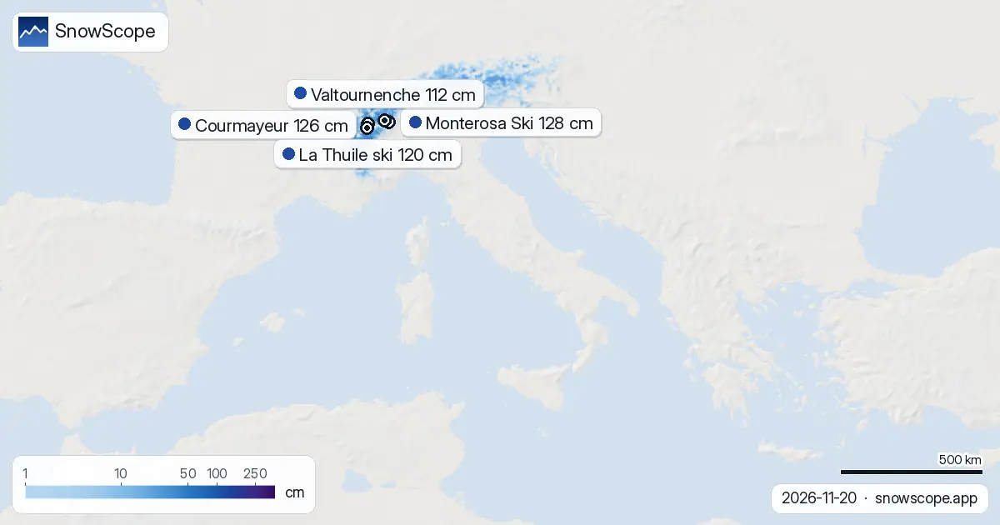

Neve in Italia oggi: altezza del manto nevoso e neve fresca, 20 novembre 2026
Venerdì 20 novembre: la neve copre circa 20.940 km² delle montagne in Italia. Sono 3.530 km² in meno rispetto a ieri. È il 22 % del territorio montano in Italia che seguiamo.
Le previsioni neve in tempo reale per Monterosa Ski nell'app SnowScopeAltezza neve, allerte powder e mappa 3D, gratis.
Il manto nevoso oggi
Sette giorni fa la superficie era di 21.760 km², 820 km² in più di adesso. Il terreno è per lo più bianco da circa 1.700 m in su.
| Country | White | Deepest resort | Next 7 days |
|---|---|---|---|
| Italia | 22 % | Monterosa Ski | 58 cm |
| Austria | 44 % | Rifflsee | 44 cm |
| Svizzera | 64 % | Glacier 3000 | 89 cm |

Altezza della neve per quota
Altezza media del manto nevoso per fascia di quota: 1.000–1.500 m: in media meno di 1 cm (6 % innevato); 1.500–2.000 m: in media 3 cm (61 % innevato); 2.000–2.500 m: in media 10 cm (94 % innevato); sopra i 2.500 m: in media 27 cm (99 % innevato).

Dove è caduta la neve fresca
La neve fresca più abbondante nelle ultime 72 ore: fino a 71 cm. Zone: Valle d'Aosta, Alpi piemontesi e Appennino centrale.
Solo nelle ultime 24 ore sono caduti fino a 26 cm.
Almeno 5 cm di neve fresca coprono circa 19.540 km².
Cosa significa sulle piste
La neve fresca sul fondo regala curve morbide in quota; più in basso resta a chiazze.
Con altra neve in arrivo, i prossimi giorni dovrebbero migliorare.
Le migliori località ora
In testa c'è Monterosa Ski: 128 cm nella parte alta delle piste.
Località con neve sulle piste in quota: 165 su 237.
Seguono: Courmayeur (126 cm), La Thuile ski (120 cm), Valtournenche (112 cm) e Ollomont (82 cm).
Courmayeur: 140 cm di neve fresca in tre giorni e fino a 80 cm in più entro lunedì, 23 novembre.
I prossimi giorni
Previsione di neve fresca: fino a 42 cm in tre giorni e fino a 58 cm in sette giorni.
Il giorno più nevoso: domenica, 22 novembre, fino a 34 cm.
Più avanti, nei giorni 8–14, sui pendii più innevati possono aggiungersi fino a 16 cm.
Consigli per sciatori
- A inizio stagione la neve sulle rocce è sottile: restate sulle piste battute.
- Sopra il limite del bosco la neve può essere ventata: attenzione sulle creste.
Su questi numeri
Le altezze neve delle località sono la neve più alta sui pendii superiori secondo il modello neve di SnowScope (circa 1 km, calcolo del 20 novembre); sono stime per un'area, non una misura in un punto. I valori delle stazioni sono misure alla data indicata. Le previsioni possono cambiare. Leggi sempre il bollettino valanghe ufficiale prima del fuoripista.
Cita questo articolo
Per ricerca, didattica o stampa: numeri e grafici sono liberamente riutilizzabili con licenza CC BY 4.0 citando così.
SnowScope (2026), Neve in Italia oggi: altezza del manto nevoso e neve fresca, 20 novembre 2026, https://snowscope.app/blog/it/2026/11/italy-snow-vs-neighbours-20-november-2026.html, consultato il 2026-11-20
SnowScope (Atlas Labs). (2026, November 20). Neve in Italia oggi: altezza del manto nevoso e neve fresca, 20 novembre 2026. SnowScope snow reports. https://snowscope.app/blog/it/2026/11/italy-snow-vs-neighbours-20-november-2026.html
BibTeX
@misc{snowscope2026italysnowvsneighbours20n,
author = {{SnowScope (Atlas Labs)}},
title = {Neve in Italia oggi: altezza del manto nevoso e neve fresca, 20 novembre 2026},
year = {2026},
month = nov,
howpublished = {\url{https://snowscope.app/blog/it/2026/11/italy-snow-vs-neighbours-20-november-2026.html}},
note = {Published 2026-11-21 11:27 UTC; accessed 2026-11-20}
}· CC BY 4.0 · Metodi, dati e strumenti →
Monterosa Ski: neve e temperatura per quota, quest'inverno vs lo scorso (strumenti) →
Segui Monterosa Ski
Gratis: un messaggio quando arriva la neve e il meteo ogni mattina.